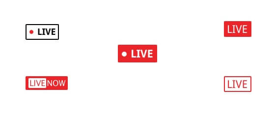
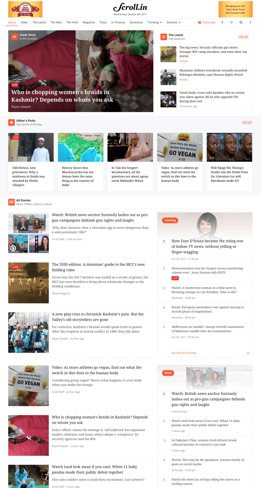
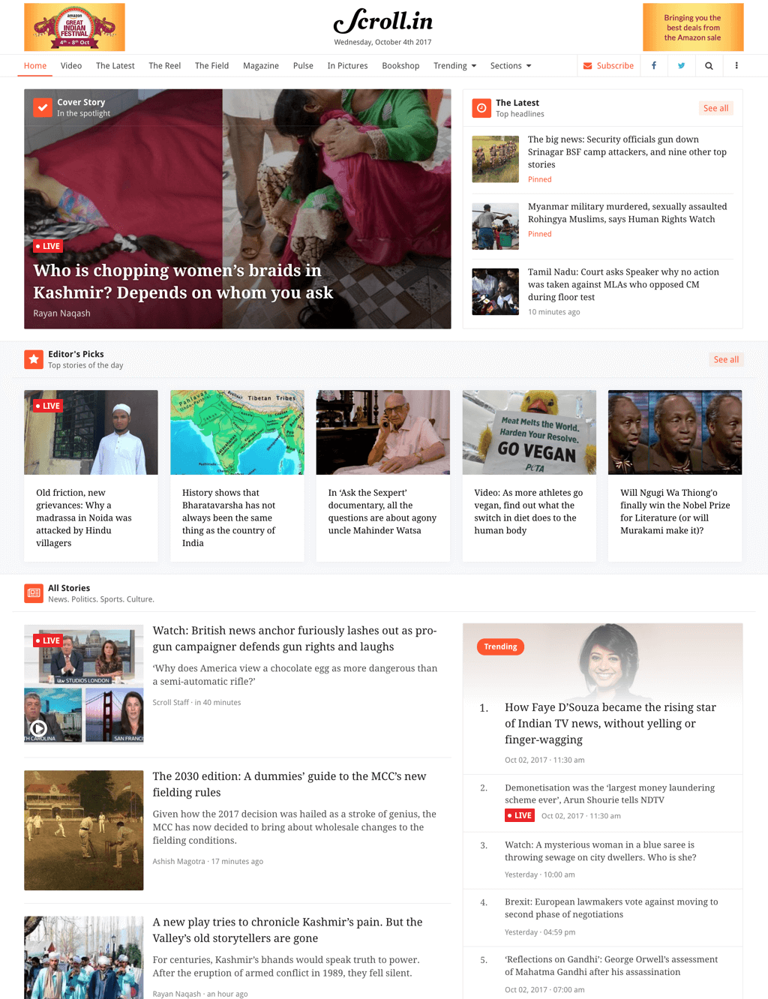

- Indicating that an article is currently live on homepage and article page (any slot)
- Indicating that a new block has been added/updated at least when the reader is on the same article (when the reader is in the middle or at the bottom of the live article)
We were working in a small group of people which involves product manager, developers and designers but the problem was big as how are we going to launch a feature that catches the eyes of reader and let him understand that a article is running live.
Also how are we going to show the live updates in a article ? We came across multiple iterations to make things happen and it was a success.
Before anything starts we need to think of something that we can add at various slots of the homepage / article page. Here are some of the blocks we've designed to check and put on different slots and check which one works perfect-
We now put few of them on them on the article and homepage to see which one works perfectly without breaking the slots where they are inserted.
Iterations -
While working on the final iteration we choose the live indicator with the dot and text live. But there was still something missing so we created a blinker animation on the dot.
Codepen for the final iteration.
Thanks for reading. All Projects